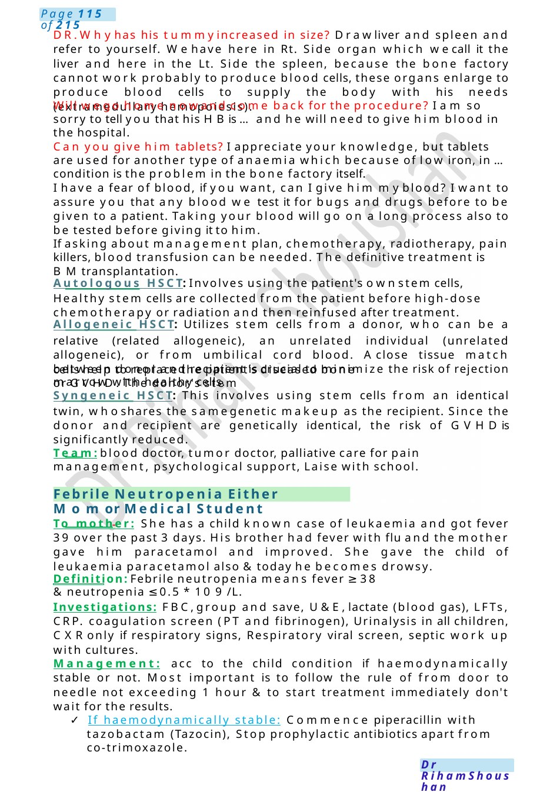

Leukemia (or HSMwith no definite diagnosis in the scenario)
Child 3 years with huge spleen, liver not tender, no L.N, no thrombocytopenia, HB:5.6, wbc 3, week +Vedirect Coombstest, no fever, generally well, hematologist asked you to do B.Maspiration • Talk to mother about possible diagnosis &management. I amhere today to talk to you about a decision taken by our team to do B.Maspiration for ...did you hear about it before?
Scenario Summary
Child 3 years with huge spleen, liver not tender, no L.N, no thrombocytopenia, HB:5.6, wbc 3, week +Vedirect Coombstest, no fever, generally well, hematologist asked you to do B.Maspiration • Talk to mother about possible diagnosis &management. I amhere today to talk to you about a decision taken by our team to do B.Maspiration for ...did you hear about it before?
Full Original Scenario

Leukemia (or HSMwith no definite diagnosis in the scenario)
Examscenario:
Child 3 years with huge spleen, liver not tender, no L.N, no thrombocytopenia, HB:5.6, wbc 3, week +Vedirect Coombstest, no fever, generally well, hematologist asked you to do B.Maspiration • Talk to mother about possible diagnosis &management.
I amhere today to talk to you about a decision taken by our team to do B.Maspiration for ...did you hear about it before?
During: Wewill use a special needle to take a small amount of the spongy material inside the bone here (refer to your hip bone), this spongy material is the factory of our blood elements which wecall it the bone marrow and produce elements that called cells... are you following me?
Before that wewill clean the skin and put for hima numbnesscream and if needed sleeping medicine, so that he will not feel any pain. After that wewill send this fluid to be examined under a microscope to find out the reason behind this problem.
After: Whencan he go home after it? Wewill consult the doctor who will do it and our consultant opinion, however if his is ok, he can go homesame day, but he will be absent from school for 2 days and not practicing sports for 1 week because of pain.
Anyprocedure has drawbacks like : pain, so that wewill put a numbness cream. somedrawbacks of anesthesia but, we will be ready by the medicine to overcome the drawbacks. bleeding also and infection, but it's very minimal and weusually did it under completely clean conditions and if such happened, we would put him under our eyes, follow his vitals and give him the proper medicine. I want to assure you that this procedure will be done by the most expert hands whodid it many times before for manykids.
DR, what are the causes of that? Westill do not know, it can be infection in his blood with virus, blood disease, problems in the way the body deals with blood elements (metabolic) or I amso sorry to tell you it can be cancer of the blood, that's why we will do this procedure after your agreement consent.

Febrile Neutropenia Either Momor Medical Student
cells help to replace the patient's diseased bone marrow with healthy cells.
DR.Whyhas his tummyincreased in size? Drawliver and spleen and refer to yourself. Wehave here in Rt. Side organ which wecall it the liver and here in the Lt. Side the spleen, because the bone factory cannot work probably to produce blood cells, these organs enlarge to produce blood cells to supply the body with his needs (extramedullary hemopoiesis).
Will wego home nowand come back for the procedure? I am so sorry to tell you that his HBis ...and he will need to give him blood in the hospital.
Can you give him tablets? I appreciate your knowledge, but tablets are used for another type of anaemia which because of low iron, in ...condition is the problem in the bone factory itself.
I have a fear of blood, if you want, can I give him myblood? I want to assure you that any blood we test it for bugs and drugs before to be given to a patient. Taking your blood will go on a long process also to be tested before giving it to him.
If asking about management plan, chemotherapy, radiotherapy, pain killers, blood transfusion can be needed. The definitive treatment is BMtransplantation.
Autologous HSCT: Involves using the patient's ownstem cells, Healthy stem cells are collected from the patient before high-dose chemotherapy or radiation and then reinfused after treatment.
Allogeneic HSCT: Utilizes stem cells from a donor, who can be a relative (related allogeneic), an unrelated individual (unrelated allogeneic), or from umbilical cord blood. Aclose tissue match between donor and recipient is crucial to minimize the risk of rejection or GVHD.The donor's stem
Syngeneic HSCT: This involves using stem cells from an identical twin, whoshares the samegenetic makeup as the recipient. Since the donor and recipient are genetically identical, the risk of GVHDis significantly reduced.
Team:blood doctor, tumor doctor, palliative care for pain management, psychological support, Laise with school.
To mother: She has a child known case of leukaemia and got fever 39 over the past 3 days. His brother had fever with flu and the mother gave him paracetamol and improved. She gave the child of leukaemia paracetamol also &today he becomes drowsy.
Definition: Febrile neutropenia means fever ≥38 &neutropenia ≤0.5 * 10 9 /L.
Investigations: FBC,group and save, U&E,lactate (blood gas), LFTs, CRP. coagulation screen (PT and fibrinogen), Urinalysis in all children, CXRonly if respiratory signs, Respiratory viral screen, septic work up with cultures.
Management: acc to the child condition if haemodynamically stable or not. Most important is to follow the rule of from door to needle not exceeding 1 hour & to start treatment immediately don't wait for the results.
- If haemodynamically stable: Commence piperacillin with tazobactam (Tazocin), Stop prophylactic antibiotics apart from co-trimoxazole.